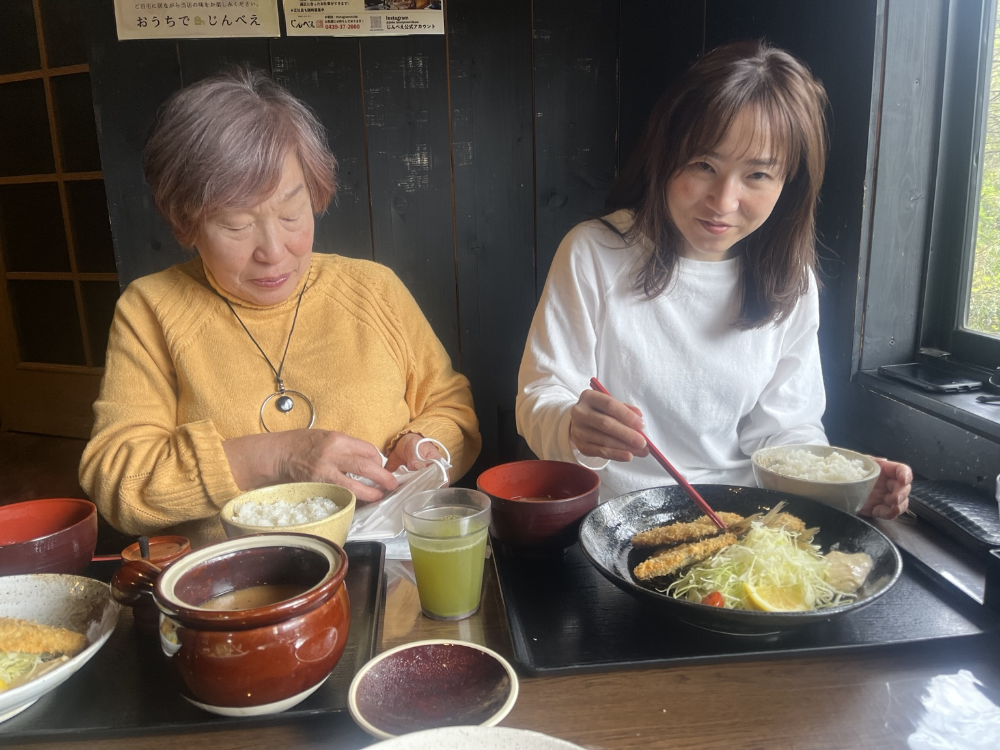

君津での家族の一日
叔母さまに会いに、裕子さんとお母さんと千葉へ。君津市でのお昼は、揚げ物の定食を囲んでほっと一息。
裕子さんはお箸を片手に、今日も食べる準備は万全。お母さんと並んだ何気ない二枚が、家族で過ごした一日の大切な記録になりました。
叔母さまとの再会を訪ねた、春の君津の思い出。
2025.04.05 · 千葉県君津市
2025年4月5日、叔母さまに会いに千葉県君津市へ。裕子さんとお母さんが並んでいただく、のんびりしたお昼ごはんのひととき。


叔母さまに会いに、裕子さんとお母さんと千葉へ。君津市でのお昼は、揚げ物の定食を囲んでほっと一息。
裕子さんはお箸を片手に、今日も食べる準備は万全。お母さんと並んだ何気ない二枚が、家族で過ごした一日の大切な記録になりました。
叔母さまとの再会を訪ねた、春の君津の思い出。